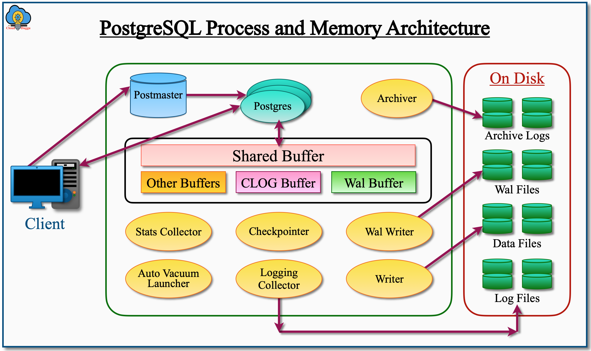

1 PostgreSQL数据库环境搭建
在现代数据驱动的研究与开发环境中，关系型数据库管理系统（RDBMS）是关键技术之一。PostgreSQL，作为开源的对象关系数据库管理系统，以其高度可扩展性和合规的标准SQL支持，得到了广泛应用。本实验指导书将指导各位同学如何在Windows、Linux以及MacOS环境下搭建一个PostgreSQL数据库环境，从而为后续的数据存储、查询和分析打下坚实基础。本实验将详细介绍PostgreSQL的安装、配置以及基本操作，帮助用户掌握数据库的基本操作技能，为科研工作中的数据管理提供有效支持。
1.1 PostgreSQL 介绍
PostgreSQL 是一种高度可扩展的对象关系型数据库管理系统（ORDBMS），以其先进的功能和可靠性著称。作为最早开发的开源数据库之一，它已经有超过30年的历史，并且在学术界和工业界得到了广泛应用。PostgreSQL 的核心特点之一是它对标准 SQL 的完全支持，这使得它在与其他数据库系统的兼容性上表现出色。此外，PostgreSQL 还支持多种数据类型、复杂的查询操作、以及用户自定义函数，这些功能使得它能够处理各种复杂的数据管理需求，从而成为许多大型应用程序的首选。
PostgreSQL 以其强大的扩展性著称，能够适应从小型应用到大型企业系统的各种需求。它提供了丰富的扩展机制，允许用户通过编写自定义函数、类型和操作符来扩展数据库的功能。这种扩展性使得 PostgreSQL 能够支持地理信息系统（GIS）中的空间数据，或者处理复杂的统计分析。此外，PostgreSQL 的存储过程功能支持多种编程语言（如 PL/pgSQL、PL/Python 和 PL/Perl），这为开发人员提供了极大的灵活性，使得他们能够在数据库内部进行复杂的计算和逻辑处理。
在性能和可靠性方面，PostgreSQL 也表现出色。它内置了多种优化技术，如索引优化器、查询计划器、并行处理等，可以显著提高复杂查询的执行效率。此外，PostgreSQL 还支持多版本并发控制（MVCC），确保在高并发环境下依然能提供一致性的数据访问体验。对于数据的安全性和可靠性，PostgreSQL 提供了全面的备份和恢复工具，支持基于时间点的恢复（PITR），以及自动故障转移功能，这些特性使得它在许多关键任务应用中得到了广泛的信赖。总的来说，PostgreSQL 以其丰富的功能、良好的性能和卓越的扩展性，成为了现代数据管理系统中不可或缺的一部分。
1.2 PostgreSQL 架构
PostgreSQL 是一种渐进式开源对象关系数据库管理系统，于 1996 年 7 月 8 日在加州大学伯克利分校发明。从那时起，PostgreSQL 进行了许多改进，使其成为一种先进的关系数据库管理系统。一个由开发人员和志愿者组成的活跃社区正在共同努力添加新功能并修复 PostgreSQL 中的错误。PostgreSQL 架构使用客户端-服务器模型接收来自最终用户的请求并处理该请求并将其还原给客户端。PostgreSQL 架构是每个用户客户端的流程。
图 Figure 1.1 展示了PostgreSQL的进程和内存架构。
1.2.1 Postmaster: PostgreSQL的Supervisor进程
Postmaster 在 PostgreSQL 架构中充当监控进程，是 PostgreSQL 启动后第一个启动的进程。它充当监听器，负责对来自客户端的传入请求进行身份验证和授权，并为每个连接分配一个名为 Postgres 的新进程。Postmaster 还会持续监视该进程，如果该进程停止，则会启动该进程。
1.2.2 PostgreSQL 的共享内存段
共享内存段是内存中的缓冲区缓存，用于事务和维护活动。分配不同的共享内存段来执行不同的操作。以下是主要的共享内存段。
1.2.2.2 预写日志缓冲区(Wal Buffer)
Wal Buffer 也称为预写日志缓冲区(Write ahead logs buffer)，即事务日志缓冲区，用于存储已更改数据的元数据信息，这些信息用于在数据库恢复操作期间重建数据。事务日志缓冲区由名为 Wal writer 的后台进程写入物理文件 WAL 段或检查点段。Wal Buffer 的属性由 wal_buffers 参数管理。
1.2.2.3 提交日志缓冲区（CLOG Buffer）
PostgreSQL CLOB 缓冲区是提交日志，是主内存 (RAM) 中分配的区域，用于存储所有事务的状态。它显示事务是否完成。此缓冲区由数据库引擎自动管理，因为没有特定的参数。它由 PostgreSQL 数据库中的所有后台服务器和用户共享。
1.2.2.4 工作内存区(Work Memory)
当数据库 SQL 查询中涉及排序操作（包括 Order By、Distinct、Merge 连接）和哈希表操作（包括哈希连接、基于哈希的聚合或 IN 子句）时，将使用 PostgreSQL 工作内存区域。工作内存由 work_mem 参数控制。在复杂的 SQL 查询中，可能会有多个排序和哈希操作，并且对于每个排序和哈希操作，都会在 RAM 中分配一个内存，因此建议不要给这个内存区域赋予很大的值，否则它会耗尽所有 RAM 空间并给其他进程带来问题。
1.2.2.5 维护工作内存区(Maintenance Work Memory)
PostgreSQL维护工作内存区域用于执行维护工作，例如创建索引、添加索引、添加外键等。它由 Maintenance_work_mem 参数控制。
1.2.2.6 临时缓冲区(Temp Buffers)
在大型排序和散列操作期间访问临时表时会使用 PostgreSQL 临时缓冲区区域。这些缓冲区是特定于用户会话的。
1.2.3 PostgreSQL 的后台进程
PostgreSQL 后台进程是 PostgreSQL 数据库的重要组成部分。这些进程用于维护内存和磁盘之间的一致性，从而使 PostgreSQL 数据库正常运行。每个 PostgreSQL 后台进程都有其作用。
1.2.3.1 后台写入器（Background Writer）
PostgreSQL 实例启动时，postmaster 会启动 PostgreSQL Background Writer。Background Writer 用于将脏缓冲区（也称为新的或修改过的共享缓冲区）写入数据文件，以便有足够的缓冲区空间可供使用。
PostgreSQL后台写入器遵循以下三个参数将脏缓冲区从共享缓冲区写入数据文件。
- bgwriter_delay (200ms by default, 10ms – 10s possible):该参数用于定义两次成功执行的等待时间。
- bgwriter_lru_maxpages (100 pages by default, 0 – 1000 possible)： 该参数用于定义每次迭代中可以写入数据文件的最大缓冲区数。
- bgwriter_lru_multiplier (2.0 by default, 0-10.0 possible): 此参数用于定义将清除传入脏页的页数，该数基于上次延迟期间的计数。例如，如果该值设置为 2，传入页为 10，则在这种情况下，除非有 20 个缓冲区未到达，否则将清除脏缓冲区。
1.2.3.2 检查点(Checkpointer)
PostgreSQL 检查点是在特定时间或由 DBA 手动发生的事件，用于将脏缓冲区（更改的数据或新数据）从内存（共享缓冲区）移动到磁盘（数据文件）。在崩溃恢复的情况下需要检查点，其中预写日志中的最新检查点告知应从哪个位置开始 REDO 恢复。
下面讲一下数据库中的更改是如何进行的，过程又是什么样的。基本上，对于任何 DDL 和 DML 语句，PostgreSQL 都要求数据存在于 shared_buffers 中，如果数据不在共享缓冲区中，则 PostgreSQL 将数据文件中的数据带入共享缓冲区，然后执行 DDL 和 DML 操作。修改后的块称为脏页。提交提交命令后，有关更改的详细信息将写入磁盘上的预写日志文件，脏页将分别写入数据文件。
PostgreSQL 检查点在以下条件下触发。
- 手动使用 CHECKPOINT 命令。
- 通过设置间隔参数 checkpoint_timeout。默认值为 300 秒。
- 当 Online Backup 启动时，PostgreSQL Checkpoint 触发器。
- 当函数 pg_start_backup 执行 PostgreSQL Checkpoint 触发的 post 时。
- 当函数 pg_basebackup 执行 PostgreSQL Checkpoint 触发的 post 时。
- 当 WAL 参数 max_wal_size 达到其最大限制时。默认值为 1 GB。
- 当 使用 CREATE DATABASE / DROP DATABASE 命令配置数据库时。
一旦 PostgreSQL 检查点命令触发，就会执行以下操作。
- 检查共享缓冲区中的所有脏页。
- 将这些脏页写入相应的数据文件中。
- 执行fsync()函数将所有最新数据记录到磁盘上。
1.2.3.3 自动真空发射器（Autovacuum Launcher）
PostgreSQL Autovacuum Launcher 是默认启用的后台进程，用于自动执行 ANALYZE 和 VACUUM 命令。此进程在 PostgreSQL 中默认启用，如果设置了自动清理，则每 autovacuum_naptime 秒运行一次。
1.2.3.4 WAL Writer
PostgreSQL WAL Writer 后台进程用于在提交发出后将更改的记录从 WAL 缓冲区写入 WAL 文件。
以下命令用于检查当前 WAL 位置文件。
postgres=# SELECT Pg_xlogfile_name(Pg_current_xlog_location());1.2.3.5 统计收集器（Statistics Collector）
PostgreSQL Statscollector 后台用于收集有关服务器活动的统计信息，例如表中的记录数、数据库详细信息、索引和表访问详细信息，并将其报告给优化器字典 (pg_catalog)。此过程是可选的，默认情况下处于开启状态。统计信息可以通过 PostgreSQL 提供的许多视图查看。
以下命令显示 PostgreSQL 中所有与统计相关的视图。
postgres=# \d pg_statPostgreSQL postgresql.conf 文件中的以下参数定义统计收集器将收集的详细信息。
- track_activities：此参数监视任何服务器进程正在执行的命令。
- track_functions：此参数跟踪 UDF（用户定义函数）的使用情况。
- track_counts：此参数跟踪在表和索引上收集的统计信息数量。
- track_io_timing：此参数将跟踪读取和写入块的数量。
1.2.3.6 日志收集器(Logging Collector)
PostgreSQL 日志收集器后台进程用于将消息记录在日志文件中。当在 postgresql.conf 配置文件中设置以下参数值时，它会起作用。
log_destination = 'stderr'
logging_collector = ON
log_directory = 'pg_log'1.2.3.7 归档器(Archiver)
当数据库处于 Archive.log 模式时，PostgreSQL Archiver 后台进程会将 WAL 缓冲区写入 WAL 文件。
1.2.4 PostgreSQL的物理文件
PostgreSQL 物理文件用于以数据文件的形式存储实际数据、WAL 文件中更改的块、日志文件中的服务器日志详细信息、存档日志信息等。这些文件中的数据被永久存储并用于各自的操作。
1.2.4.1 数据文件
PostgreSQL 数据文件用于存储实际数据。它存储实际数据，不存储任何指令或任何类型的代码信息。当用户请求数据时，PostgreSQL 会在共享缓冲区中查找数据，如果不存在，则从共享缓冲区中的数据文件加载数据，然后进一步处理。
1.2.4.2 Wal文件
PostgreSQL WAL 文件用于在提交发生之前存储 WAL 缓冲区中的所有更改。 WAL 文件主要用于在数据库存储上的写入操作期间保持持久性和一致性。
1.2.4.3 日志文件
PostgreSQL 日志文件存储与服务器相关的所有日志、stderr、csvlog、Syslog、错误消息、警告消息、信息消息等。它可以帮助数据库管理员详细调试任何问题。
1.2.4.4 档案文件
PostgreSQL 存档日志文件用于将 WAL 段存储在磁盘上。存档日志用于在发生意外崩溃导致数据丢失的情况下，在这种情况下，存档日志用于修复。
1.3 PostgreSQL 与 Oralce 比较
Oracle 数据库是由甲骨文公司开发的一款企业级关系数据库管理系统（RDBMS），以其高性能、高可用性和强大的数据处理能力著称。它广泛应用于全球各行业的大型企业，支持复杂事务处理、数据仓库、大数据分析等多种应用场景。Oracle 数据库还提供了丰富的功能，如多租户架构、自动存储管理（ASM）、Real Application Clusters（RAC），以及强大的安全性和备份恢复机制。
在选择数据库管理系统（DBMS）时，PostgreSQL 和 Oracle 常常被放在一起进行比较。尽管两者都在企业级应用中表现出色，但它们在特性、成本、扩展性、开源性和社区支持等方面存在明显差异。
开源性与成本: PostgreSQL 是一个完全开源的数据库管理系统，这意味着用户可以免费获取、使用和修改其源代码。因此，PostgreSQL 在总拥有成本（TCO）方面明显低于Oracle。此外，PostgreSQL 没有许可证费用，使其在中小企业和初创公司中非常受欢迎。相比之下，Oracle 是一种专有软件，许可证费用较高，且维护成本相对较大。这使得Oracle在大型企业或有特殊需求的场景下更常被选择。
功能性与扩展性: Oracle 在功能性上非常强大，尤其在数据处理、大规模事务处理以及高可用性方面有着成熟的解决方案。Oracle 拥有诸如Real Application Clusters（RAC）、自动存储管理（ASM）等企业级特性，支持跨多个服务器的高可用性和负载均衡。虽然PostgreSQL 也具备很强的功能性，但在某些高端企业级功能上，Oracle 仍然占据优势。然而，PostgreSQL 的高度扩展性使其能够通过插件和扩展模块实现许多类似功能，如PostGIS扩展用于空间数据处理。
标准支持与兼容性: PostgreSQL 完全遵循 SQL 标准，并且以其对复杂查询和自定义数据类型的支持而闻名。Oracle 也支持标准 SQL，但引入了许多自己的扩展和功能，这些扩展在一定程度上增强了功能性，但也导致了与其他系统的兼容性问题。对于需要严格遵循 SQL 标准或需要迁移到其他平台的用户，PostgreSQL 可能更具吸引力。
性能与优化: 在性能优化方面，Oracle 提供了广泛的工具和选项，如自动内存管理（AMM）、自动SQL调优等，使得复杂查询和大规模数据处理得以高效执行。PostgreSQL 也具备强大的查询优化器和并行处理能力，但在超大规模数据集和极端性能优化需求下，Oracle 的成熟工具集可能提供更好的支持。
社区与支持: PostgreSQL 拥有一个庞大而活跃的开源社区，用户可以从中获得免费的支持和丰富的资源。Oracle 则主要依赖于商业支持，提供了全面的技术支持服务，但这通常伴随着高昂的费用。对于需要广泛社区支持的用户，PostgreSQL 是一个强大的选择，而对于需要厂商直接支持的大型企业，Oracle 则更为合适。
总结而言，PostgreSQL 和 Oracle 各有优势。PostgreSQL 适合那些寻求低成本、开源灵活性和强大社区支持的用户，而Oracle 则在功能性、企业级支持和超大规模性能优化方面更具优势。
1.4 PostgreSQL 与 Oralce 兼容性
在数据迁移方面，PostgreSQL 和 Oracle 数据库之间的兼容性是一个复杂且多维度的问题。尽管两者都是功能强大的数据库管理系统，但由于它们在架构、数据类型、SQL 方言以及特性实现上的差异，直接迁移通常面临一定的挑战。以下是关于它们在数据迁移方面兼容性的几点总结：
SQL 语法和方言差异: Oracle 和 PostgreSQL 虽然都支持 SQL，但它们的 SQL 实现存在差异。Oracle 引入了许多扩展和专有功能，如 PL/SQL 语言、序列和触发器的实现方式等，而这些在 PostgreSQL 中需要不同的实现方式。例如，Oracle 的 PL/SQL 代码通常需要转换为 PostgreSQL 的 PL/pgSQL，而这一过程可能涉及大量的代码重构。此外，Oracle 中的一些专有函数和操作符在 PostgreSQL 中不存在，因此需要通过自定义函数或替代方案来实现。
数据类型兼容性: Oracle 和 PostgreSQL 之间的数据类型并不完全匹配。虽然两者都支持一些基本的数据类型如整数、浮点数和字符类型，但在某些数据类型上存在显著差异。例如，Oracle 的
NUMBER类型与 PostgreSQL 的NUMERIC类型在精度和存储方式上有所不同；Oracle 的CLOB和BLOB类型在 PostgreSQL 中对应TEXT和BYTEA类型，这些差异可能会影响数据的存储和处理方式。在迁移过程中，数据类型的不兼容可能需要对表结构进行修改或通过类型转换来解决。存储过程和触发器: Oracle 的 PL/SQL 是一种功能强大的存储过程语言，而 PostgreSQL 使用的是 PL/pgSQL。尽管两者的功能相似，但语法和功能上存在差异。Oracle 中复杂的存储过程和触发器在迁移到 PostgreSQL 时，可能需要重新编写甚至重构。此外，Oracle 的一些特性如包（Packages）和全局临时表（Global Temporary Tables），在 PostgreSQL 中没有直接的等效实现，需要寻找替代方案或调整应用逻辑。
工具支持: 为了简化迁移过程，有许多工具可以帮助识别和转换不兼容的 SQL 语法和数据类型。例如，Oracle 提供了 SQL Developer 和 Data Pump 工具，而 PostgreSQL 社区则提供了诸如 pg_dump、pgloader 等工具来帮助进行数据导入和转换。然而，即便有这些工具的帮助，复杂的应用程序仍然可能需要手动调整和详细的测试。
性能优化差异: Oracle 和 PostgreSQL 的查询优化器和性能调优机制存在差异。迁移后的系统可能需要调整索引、优化查询计划或重新配置数据库参数，以确保在 PostgreSQL 上的性能能够达到预期。这些调整通常需要在迁移后进行详细的性能测试和优化。
总之，尽管在工具的支持下，Oracle 和 PostgreSQL 之间的数据迁移是可行的，但由于两者在SQL方言、数据类型、存储过程和性能优化等方面存在显著差异，迁移过程通常需要深入的分析、调整和测试，以确保迁移后的系统能够正常运行并满足性能需求。
1.5 PostgreSQL服务器安装之Linux环境
在 PostgreSQL 的这一部分中，我们将在 Ubuntu 18.04.4 LTS (Bionic Beaver) 系统上安装 PostgreSQL 版本 14。 PostgreSQL 安装完成后，我们将通过示例探索 PostgreSQL。
1.5.1 环境要求
- 操作系统 (OS)。我们使用 Ubuntu 18.04.4 LTS 版 Linux 操作系统进行此安装。
- 硬件要求。最低硬件要求是 1 GHz 处理器、2 GB RAM 和 512 MB HDD。
- PostgreSQL。已使用 PostgreSQL 版本 14 在 Linux 上安装。
1.5.2 安装步骤
步骤 1. 在 Ubuntu Linux 上安装 PostgreSQL 的第一步是启用 apt 存储库。请转到 Ubuntu 的 https://www.postgresql.org/download/linux/ubuntu/ 目录并复制 apt 存储库行。运行以下语句以启用 Ubuntu 的 PostgreSQL apt 存储库。
sudo sh -c 'echo "deb http://apt.postgresql.org/pub/repos/apt $(lsb_release -cs)-pgdg main" > /etc/apt/sources.list.d/pgdg.list'步骤2. 在此步骤中使用以下命令导入存储库签名密钥并更新包列表。
wget --quiet -O - https://www.postgresql.org/media/keys/ACCC4CF8.asc | sudo apt-key add -步骤3. Ubuntu 的 PostgreSQL 官方存储库已添加到我们的 Linux 系统中，现在使用以下命令更新系统存储库列表。
sudo apt-get update步骤4. 现在使用下面提到的 apt-get 命令来安装 PostgreSQL。我们使用 14 和以下命令来安装 PostgreSQL 14 版本。您只需提及即可安装任何版本。
sudo apt-get -y install postgresql-14步骤5. PostgreSQL 安装完成后，集群将默认初始化。我们可以使用下面的命令来检查 PostgreSQL 集群的状态。图 Figure 1.2 中列出PostgreSQL运行的后台进程。
ps -ef | grep postgres步骤6. PostgreSQL 在安装时会创建用户名 postgres 和同名的系统帐户，我们可以使用此用户登录 PostgreSQL。使用以下命令登录，并提供用户密码进行身份验证。登录完成后，使用 psql 工具连接到集群，如以下命令所示。
user@ubuntu:-$ sudo -i -u postgres
postgres@ubuntu:~$ psql图 Figure 1.3 显示登录成功的命令行提示符界面。
1.6 PostgreSQL服务器安装之Windows环境
在本关于 PostgreSQL 的教程中，我们将介绍在 Windows 10 操作系统上安装 PostgreSQL 版本 14。安装完 PostgreSQL 后，我们将对其进行探索。
1.6.1 环境要求
- 操作系统（OS）。我们将使用Windows 10操作系统来安装PostgreSQL。
- 硬件要求。最低硬件要求是 1 GHz 处理器、2 GB RAM 和 512 MB HDD。
- PostgreSQL。 PostgreSQL 版本 14 用于安装在 Windows 10 操作系统上。
1.6.2 安装步骤
步骤1. 请导航到下面的 PostgreSQL 下载链接。 https://www.postgresql.org/downloads
图 Figure 1.4 显示了下载的界面。

步骤2. 选择操作系统为windows，然后如下图 Figure 1.5 所示进行操作。
步骤3. 现在单击“下载安装程序”以下载软件。如图 Figure 1.6 所示。
步骤4. 选择Windows x86-64，然后单击下载按钮开始下载。
步骤5. 现在转到 Windows 的下载文件夹，右键单击 PostgreSQL 设置文件，然后选择以管理员身份运行。
步骤6. PostgreSQL 安装向导将启动。
步骤7. 现在选择安装目录以继续安装。如图 Figure 1.7 所示。
步骤8. 从列表中选择所有组件，然后单击“下一步”继续。如图 Figure 1.8 所示。
步骤9. 选择数据目录的位置，然后单击下一步。如图 Figure 1.9 所示。
步骤10. 现在请输入数据库超级用户postgres的密码，然后单击下一步。如图 Figure 1.10 所示。
步骤11. PostgreSQL 默认端口是 5432。所以保持原样，然后单击下一步。如图 Figure 1.11 所示。
步骤12. PostgreSQL 向导将显示用于安装的设置，如下图 Figure 1.12 所示。单击下一步继续。
步骤13. PostgreSQL 向导将开始安装，如下图 Figure 1.13 所示。
步骤14. 在 Windows 上完成 PostgreSQL 安装后，我们将收到以下窗口 Figure 1.14 。
步骤15. 现在转到 Windows“开始”并选择 PostgreSQL 14，然后选择 pgAdmin 4。输入我们在安装过程中输入的密码以检查连接。如图 Figure 1.15 所示。
步骤16. 我们可以看到数据库集群已启动并正在运行，仪表板显示了数据库的不同参数，例如数据库会话、每秒事务数、块 I/O 等。